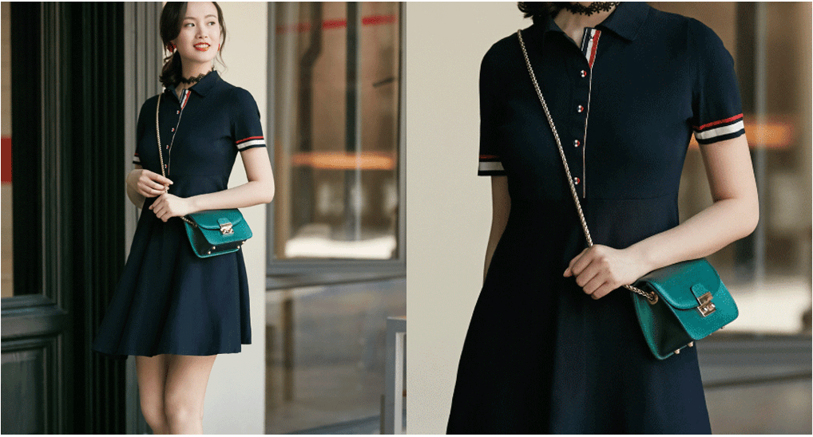
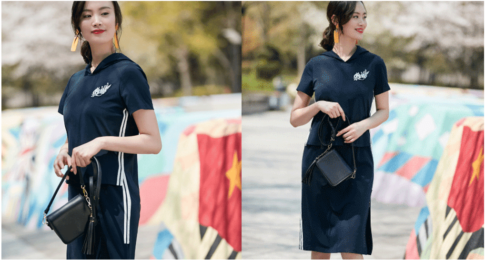
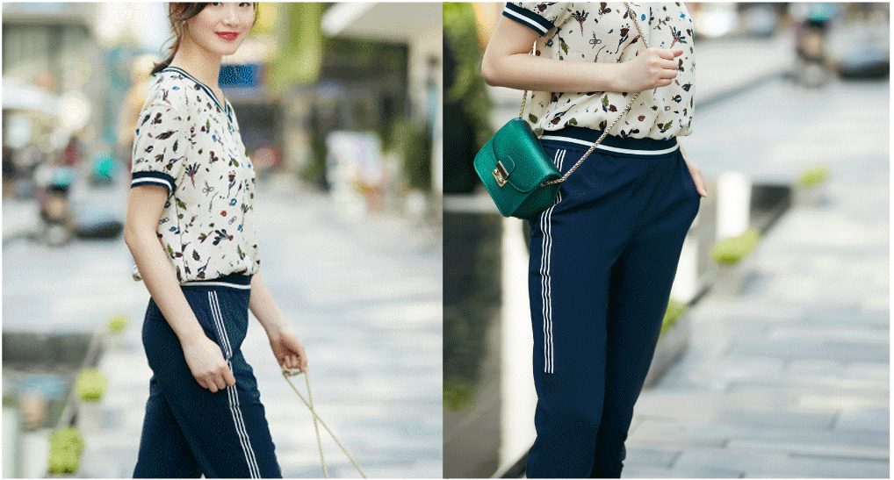

首页: 新闻动态 > 夏日,吹起,运动风
新闻动态
设计师们以旧翻新的能力好比- -个个粉刷匠,竟然能让曾经难以被潮流接受的POLO衫也时髦起来,就连作为延伸品的POLO裙都炙手可热了。相比POLO衫, POLO裙的优点之一就是省去了搭配的烦恼,且收腰处理之后,更修饰身形,加入红白条纹,则弱化了年龄。
条纹亦是时髦运动风不可缺失的要素之一, 尤其装饰于侧边之后,得到了大批时尚人士的宠爱,竖向延伸的条纹,更容易勾勒出优美曲线,裙边的开衩,随性而性感为日常的休闲带去美好的心情。
裤装的运动感的确会比裙装来得直接,可相对的,穿出时髦感的难度就增加了,所以,成套穿着|依旧是省力的好方法,相互呼应的条纹可以为整理造型加分,同时 V领设计的海洋碎花上衣显瘦清新,不正是这夏日运动风的极佳表现嘛!
